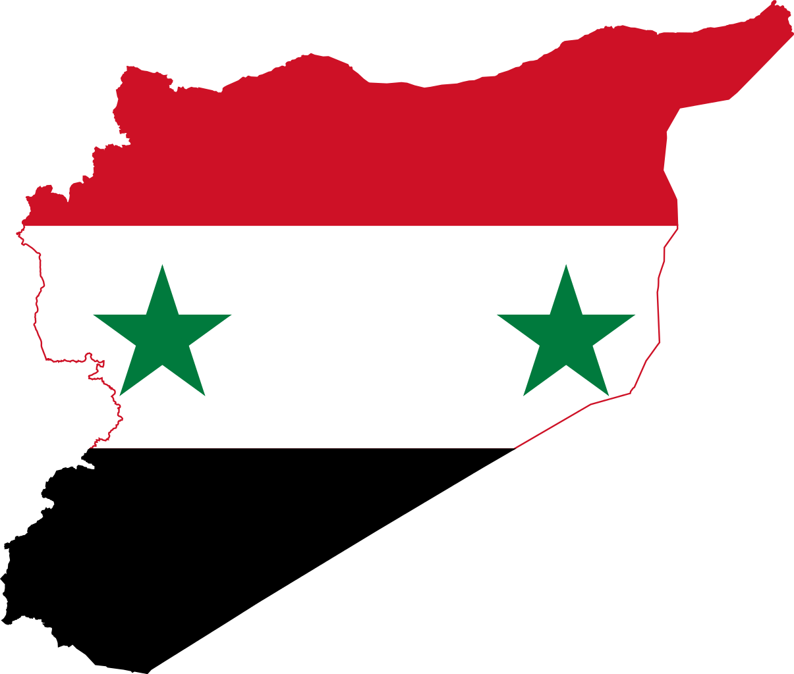
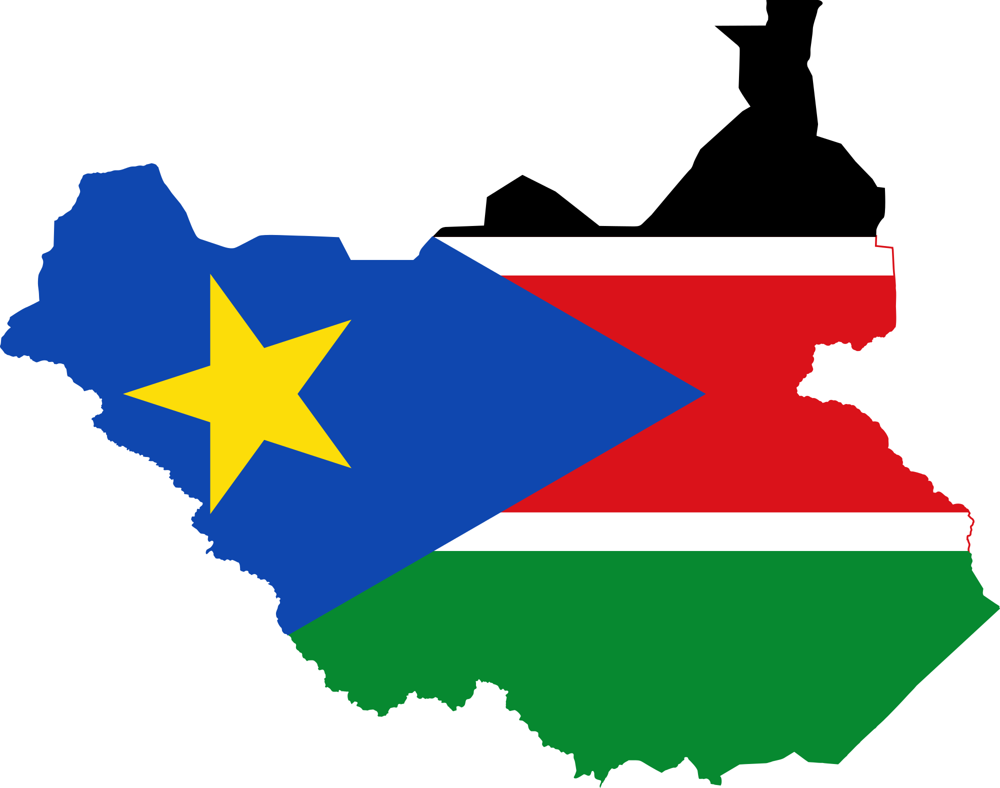

Problem Page
Our Problem
Our problem is war and education in developing countries.
Pakistan
There is terrorist organization operating in their borders and in a neighboring country

South Sudan
Syria:there is a massive civil war and terrorists everywhere
South Sudan:there is a civil war and there is almost no modern infrastructure or institutions
South Sudan

South Sudan
Basic issue in country:
Teachers are under qualified. Classrooms have low literacy rates. Government misses payments to soldiers causing riots.
Cause and Problem;
There has been lots of wars in South Sudan because the government does not provide for the citizens. Females rarely go to
school and get educations.
Effects;
Low rates of education and literature. Low government and riots
Solution;
Donations along with programs dedicated to teaching teaches. The government is creating a program to payback student loans
